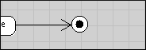
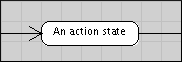
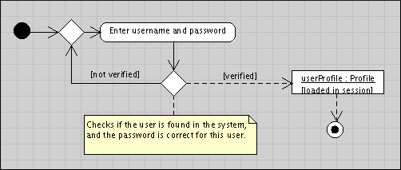
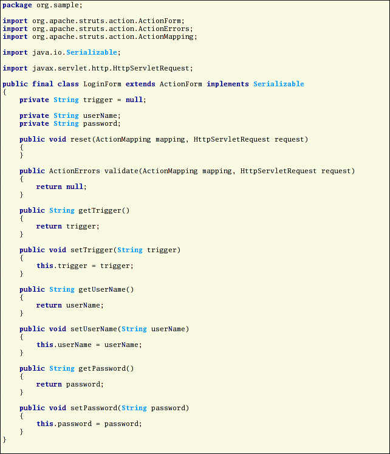

Wouter Zoons, draftdog@users.sourceforge.net
I have had a very hard time trying to explain the details described in this document as the matter is more complicated than it seems at first sight. Re-reading everything I realized people might have trouble understanding certain sections. I recommend taking a look at the example and trying one out for yourself. If something is not clear or you think there are things that can be improved please send an email to the andromda-devel@lists.sourceforge.net mailing list.
In order to install the cartridge you will need to copy andromda-bpm4struts.jar to the cartridge directory in your AndroMDA installation. Copy to a directory like this : ${andromda.install.path}/cartridges/andromda-bpm4struts/.
The cartridge will only work with an AndroMDA distribution of version 3.0 or higher.
In your Ant build.xml task you will need to have something like this:
<outlet cartridge='bpm4struts' outlet=''actions'' dir='${path}'/>
<outlet cartridge='bpm4struts' outlet=''forms'' dir='${path}'/>
<outlet cartridge='bpm4struts' outlet=''config'' dir='${path}'/>
<outlet cartridge='bpm4struts' outlet=''pages'' dir='${path}'/>
</andromda>
This cartridge will generate the most important files that you will need to build your Struts application. Although not everything can be generated we try to take over as much work as possible, therefore one of the top requirements for this cartridge is: the user needs only to write application specific business-process logic, the rest should be generated from the model.
In the Struts MVC framework we consider the following elements:
In order to be able to generate all these elements we will use a common means of describing the application flow: UML. Please note that the UML model will need to follow some strict guidelines, these are not constraints but conventions. Respecting these guidelines in a strict sense will avoid misinterpretation (by human-readers as well as machine-readers). More on this later.
What do we have in UML that can help us model our application:
When modeling an application process flow in UML you should not take into account that the end result will be implemented in Struts, it could very well be you change your mind later on and decide to use another technology. That's why you should think about modeling a front-end rather than web pages or GUI windows.
First of all it is important to note that you will be modeling on the level of each individual use-case, a use-case combines each unique unit of process logic together. Typically application use-cases could be: 'Login', 'Add item to basket', 'Send purchase order', ... You would then model an activity graph for each such use-case. In order to be able to interconnect the different use-case you would use state charts, these will connect a use-case's final states to the initial states of the next use-cases.
To show you the code generation process I decided to start from an example. Consider the following well known use-case: 'Login'. A user is presented to enter his name and password for verification, if verification succeeds he can continue, otherwise he is prompted again. Here are the diagrams for this use-case:
 
What is not shown on these images is that the 'Login' use-case is
linked to the 'LoginController' class by means of a tagged value;
this is the reason the cartridge will know what classes to generate
from the model, more concretely what the attributes of the form are.
So exactly what is generated from these simple diagrams5 ? Let's take a look.
For every action state in the graph a corresponding JSP page is generated,
from these pages a call to the controller class is made.

Notice how the controller action is called with a parameter. In this
particular case there is only one trigger (it has not been named and
is therefore anonymous) so there will only be a single hyperlink or
submit button.
First of all we will have an action class generated from this use-case, this class serves as the controller class. There will be an abstract parent class as well as an implementation class. The latter is used to code the link to the business objects, this is done manually.

Notice how the model elements from the use-case's graph have been
transformed into Java code:

The controller implementation obviously extends the abstract controller
class and implements the abstract methods.

This is a simple Bean class, the trigger field is used to store the
'button' used to trigger the call to a controller class. All the other
fields represent the input fields that are used in the view (JSP).

We can clearly see these distinct parts in the configuration file:
When you understand what happened in the short example you are ready to try it for yourself, here's a small guide that will help you in the process. This documentation comes with a sample UML project (modeled in Poseidon 1.6), open that project while reading this section, you will much better understand what is going on.
First of all make sure you are able to create your model with some stereotypes, you will need to declare them first
You will then need to model the application workflow on the highest level, we call this coarse-grain modeling. Basically this comes down to modeling the interconnection of different use-cases.
Create a UseCase for each workflow, tag this UseCase with the 'FrontEndWorkflow' stereotype. Add a state graph to this UseCase (you will do this by selecting diagram in your CASE tool, do not confuse state graphs with activity graphs). Model the workflow in this graph.
Each state in this workflow will need to be modeled as a individuel UseCase, these are described next.
For each state you will create another UseCase model element, this time you will add an activity graph to that UseCase, in there you will model the activity on a lower level, this is called fine-grain modeling. When modeling such as use-case you will need to tag each ActionState with the 'FrontEndView' stereotype. The Login UseCase (see 5.1) is such an example. Each such UseCase needs a tagged value that links it to a Class, this is to tell the cartridge which object handles the process control. You do this by using a tag like this, where obviously the right-hand argument is a fully qualified name of a class in the UML model:
That's all, simply create the class with the name and the package specified in the tagged value of the UseCase. Use the 'FrontEndController' stereotype here.
If you wish to use forms with your controller you can optionally define a class that will be used as the form bean, you may add attributes to this class, they will be taken into account by the code generation process. Do not forget to make an association between the controller class and this class. Adding more than one model class to a controller class may give undefined results. Use the 'FrontEndModel' stereotype here.
Most CASE tools allow a very flexible way of modeling your applications, this is a good thing. However, as a UML model is independent from any implementation technology sometimes this freedom imposes some issues. Therefore this section explains the model constraints you will need to respect when modeling.
I decided the most efficient way of explaining these constraints would be to use an EBNF-like syntax, the '::=' shows what state vertex may follow, the '|' means 'or', x+ (where x is a number) means at least x times.

Also important is that you can only have guarded transitions combined on a decision point, the reason is that while UML allows guards on any transition this is difficult to translate into a Struts front-end. Strictly speaking a guard is evaluated after that transition's trigger has been called, but what happens if the guard fails ? Do we display an error, do we re-start the use-case, ... ? A simple and straightforward solution is to not apply guards as strictly as they are modeled in UML, concretely this means we will never evaluate guards individually, but we will evaluate a single decision point where the guards are possible outcomes. The guard representing the resulting outcome corresponds to the transition that will then be followed.
The following rules describe the conversion from names in the UML model's graphs to names in the generated code. You are free to use any name for your model elements, except for classes, you should give them the name you want in the generated code.
This means action states, use-cases, ... can have any name, the cartridge will take care of it.
All non alphanumeric characters will be discarded and be replaced by a hyphen, all characters will be converted to lowercase. Example
becomes: enter-name-number
All non alphanumeric characters will be discarded, the character following such discarded character will be uppercased. This first character will also be uppercased. Example
becomes: EnterNameNumber
| PIM ModelElement | Aspect | PSM Feature
UseCase |
This document was generated using the LaTeX2HTML translator Version 2002 (1.62)
Copyright © 1993, 1994, 1995, 1996,
Nikos Drakos,
Computer Based Learning Unit, University of Leeds.
Copyright © 1997, 1998, 1999,
Ross Moore,
Mathematics Department, Macquarie University, Sydney.
The command line arguments were:
latex2html -no_subdir -split 0 -show_section_numbers /tmp/lyx_tmpdir5282kR42Z9/lyx_tmpbuf0/readme.tex
The translation was initiated by draftdog on 2003-10-27